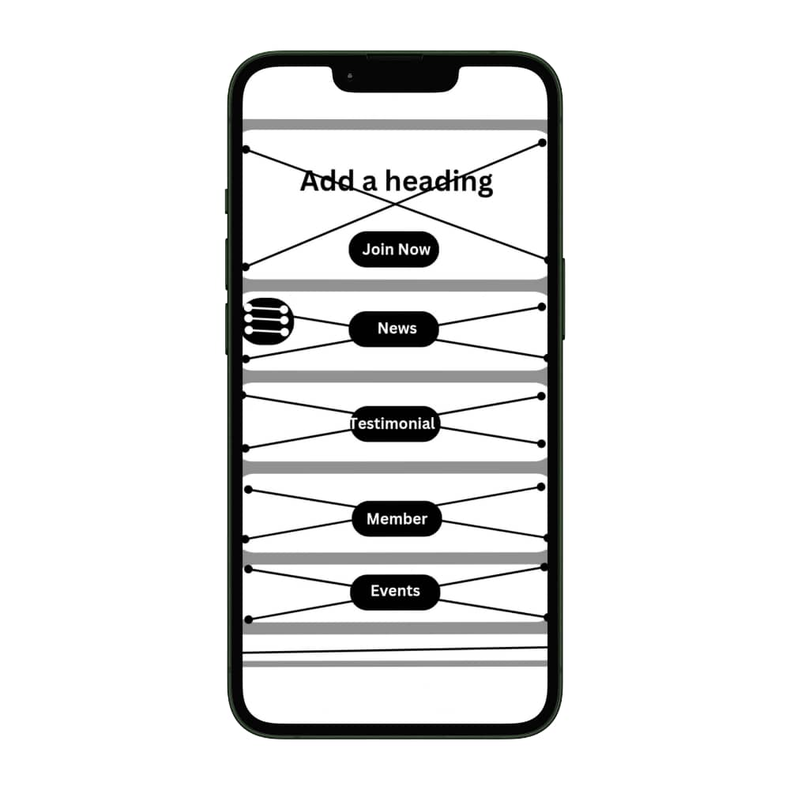
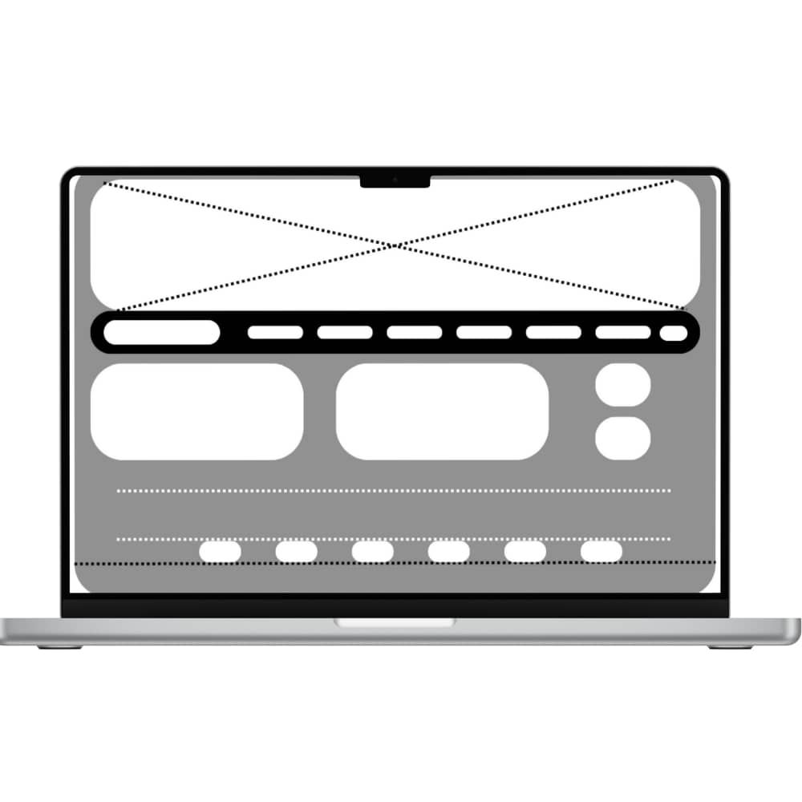

Site Name
Bayelsa Chamber of Commerce – This name represents the chamber that operates in Bayelsa State, Nigeria's commercial hub. The word "Chamber" was selected as it highlights the role of the organization in advocating for businesses and promoting commerce in the region.
Site Purpose
The Bayelsa Chamber of Commerce website aims to provide key information and services to businesses in the Bayelsa region. The purposes include:
- Connecting local businesses and promoting networking opportunities.
- Providing resources on economic development, policy updates, and business support services.
Scenarios
The website will cater to the following audience questions:
- What upcoming business events and expos will be held in Bayelsa this month?
- How can I become a member of the Bayelsa Chamber of Commerce?
- Where can I find the latest reports on economic growth and investment opportunities in Bayelsa?
Color Schema
The website will use the following color scheme to reflect the brand:
- #1E90FF (Dodger Blue): This vibrant blue will be used for the header and accent elements to convey professionalism and trust.
- #FFFFFF (White): Background color for text readability and clean layout.
Typography
The following fonts will be used:
- Roboto: A modern sans-serif font for headings to ensure clarity and modern appearance.
- Open Sans: A simple font for body text to maintain readability across devices.
Wireframe
Below is a basic wireframe layout of the home page for both mobile and desktop views:

